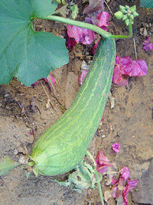
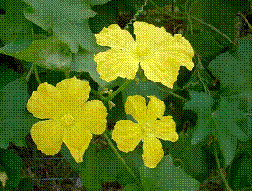
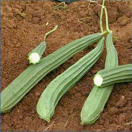
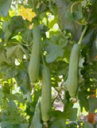
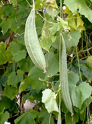

HORT 281 :: Lecture 08 :: ORIGIN, AREA, PRODUCTION, VARIETIES, PACKAGE OF PRACTICES FOR RIDGE GOURD

Origin, area, production, varieties, package of practices for RIDGE GOURD
Ridge Gourd (Luffa acutangula Roxb.) (2n = 26) (Hindi : Ghia tori) &
Smooth Gourd (Luffa cylindrica Roem.) (2n = 26) (Hindi: Kali tori)
Both ridge or ribbed gourd and smooth or sponge gourd belong to genus Luffa. Genus name was derived from the product “Loofah” used as bathing sponges, scrubber pads, doormats, pillows, mattresses, cleaning utensils, etc. Both species contain a gelatinous compound called luffein.
Both crops are cultivated on a commercial scale and grown in homesteads for its immature fruits which are used as cooked vegetable. Fibre of mature dry fruits is used as a bath sponge. As tender fruits are easily digestible and appetizing, it is prescribed for those who are suffering from malaria and other seasonal fevers.
|  | 
Luffa acutangula |
 |

Luffa cylindrica |
||
Origin and distribution
Origin of ridge gourd is not known. Smooth gourd may be a native of South Asia or Africa or Australia.
Varieties-Ridge gourd
Developing institution |
Variety |
Special features |
IIHR, Bangalore. |
Arka Sumeet |
Fruits lush green, cylindrical, 55 cm long 2.5 cm girth and 380 g weight with prominent ridges, delicate aroma. Days to first harvest 50-55. |
|
Arka Sujat |
Fruits lush green, cylindrical, medium long (35-45 cm) and average weight (350g). Yield 63 t/ha in 100 days. |
IARI, New Delhi. |
Pusa Nasdar |
Fruits club shaped, light green in colour, 15-20 fruits / plant, yield 15-16 t/ha. |
GBPU&T, Pantnagar. |
Pant Torai-1 |
Fruits 5 cm long and club shaped, yield 10 t/ha. More suitable for rainy season. |
Tamil Nadu Agricultural University |
CO.1 |
Fruits long (60-75 cm), first harvest in 55 days, 10-12 fruits / plant weighing 3-4 fruits / kg. |
|
PKM-1 |
Fruits dark green, average weight 300g, yield 28-30 t/ha in 160 days. |
|
CO.2 |
Fruits very long (90-100 cm), weighing 350-400g., green with shallow grooves, duration 120 days, yield 25 t/ha. |
HARP, Ranchi |
Swarna Manjari |
Tolerant to powdery mildew. Fruits elongated, medium sized, highly ridged, green with soft flesh. Days to first harvest 65-70 days. Yield 18-20 t/ha in 140-150 days. |
|
Swarna Uphar |
Fruits elongated, medium sized (200g), ridges with soft weak flesh. Days to first harvest 65-70. Fruits lush green, cylindrical, 55 cm long 2.5 cm girth and 380 g weight with prominent, ridges, delicate aroma. Days to first harvest 50-55. |
Punjab Agricultural University, Ludhiana. |
Punjab Sadabhar |
Fruits long, 3-5 cm thick and slightly curved, yield 10 t/ha. |
KKV, Dapoli |
Konkan Harita |
Fruits dark green, 30-45 cm long, tapering at ends, 10-12 fruits / plant. |
Satputia is a cultivar in Bihar which is hermaphrodite and produces pale green small fruits in clusters. In each cluster 5-7 fruits are produced. Yield is 20-25 t/ha.
Varieties – Sponge gourd
Developing institution |
Variety |
Special features |
IARI, New Delhi. |
Pusa Chikni |
Early variety. Fruits smooth dark green and cylindrical, 15-20 fruits / plant. |
|
Pusa Supriya |
Fruits pale green, 15-20 cm long, straight and slightly curved at stem end, pointed distal end with long peduncle, average fruit weight 110 g at vegetable harvest stage. Yield 10-11 t/ha. |
|
Pusa Sneha |
Suitable for long distance transport, fruits dark green, 20-25 cm long with hard skin and soft flesh. Yield 12 t/ha. |
MPAU, Rahuri. |
Phule Prajakta |
Fruits medium green with dark green sutures, yield 15 t/ha. |
BAC, RAU, Sabour, Bihar |
Rajendra Nenua 1 |
Fruits long, greenish white, smooth and thick, resistant to fruit fly and fruit rot. Yield 25 t/ha. |
Climate and soil
Like bitter gourd, ridge gourd and smooth gourd are typical warm season crops and come up well during summer and rainy seasons. Optimum temperature required is 25-27oC. Ideal soil is fertile well drained loam rich in humus.
Cultivation practices
Both ridge and smooth gourd are grown during summer and rainy season by sowing seeds during January – February and June – July, respectively. Seeds are sown in raised beds, furrows or pits @ 3.5-5.0 kg/ha for ridge gourd and 2.5-5.0 kg/ha for sponge gourd. Since seeds are with hard seed coat, it is advisable to soak seeds overnight in water. A row-to-row distance of 1.5-2.5 m and hill to hill distance of 60-120 cm is required for both crops under bower or trellis system. When it is trailed to ground under pit system, a row-to-row spacing of 1.5-2.0 m and pit-to-pit distance of 1.0-1.5 m are recommended for both crops.
Manure and fertilizer requirements, irrigation and intercultural operations are same as that of bitter gourd.
Harvesting
Crop is ready for harvest in about 60 days after sowing. Both crops are picked at immature tender stage. Fruits attain marketable maturity 5-7 days after anthesis. Over-mature fruits will be fibrous and are unfit for consumption. To avoid over-maturity, picking is done at 3-4 days interval. Harvested fruits are packed in baskets to avoid injury and can be kept for 3-4 days in a cool atmosphere.
Yield: 7-5 – 15.0 t/ha.
Pests and Diseases of Cucurbits
Cucurbits are affected by a large number of insect pests, nematodes and diseases. Major pests and diseases affecting cucurbit vegetables are discussed below:
Pests
Fruit fly, red pumpkin beetle and epilachna beetle cause damage to most of cucurbits. In addition, insects like gall fly; aphids, leaf hopper, ants, worms, underground semi loopers, leaf miners, fruit borers and mites affect specific cucurbits. Intensity of infestation varies from place to place.
Fruit fly (Bacterocera cucurbitae)
This is a major pest of majority of cucurbits especially that of bitter gourd, snake gourd, pointed gourd, muskmelon, oriental pickling melon, watermelon, tinda and pumpkin. Adult fly has reddish brown body with transparent and shiny wings, bearing yellow-brown streaks. It lays eggs singly or in clusters of 4-12 in flower or developing fruits or ripening fruits with the help of sharp ovipositor of females. Eggs hatch in 2-9 days and maggots feed on internal contents of fruits causing rotting. Pupation is in ground at a depth of 1.5-15.0 cm. Infestation is more during rainy season.
Adopt following package for control of fruit fly:
- Cover developing fruits with paper cover or polythene cover immediately after anthesis and pollination.
- Collect and destroy affected fruits by dipping in hot water or insecticide solution. Do not leave infested fruits on gourd.
- Use light trap and poison baits during night. Spray a bait solution containing 200 g gur or sugar and 20 ml Malathion 50 EC in 20 1 of water as coarse droplets on lower surface of leaves.
- Spraying on under surface of leaves of maize plants grown in rows at a distance of 8-10 m in cucurbit field is also effective as flies rest on such tall plants.
- Hang baits containing sex attractants like pheromones or protein hydrolysate with Furadan granules. Hanging coconut shells with pieces of fully ripened fruits of “Mysore poovan” banana or toddy or molasses along with Furadan granules also attract and kill fruit flies.
Red Pumpkin Beetle (Aulacophora foveicollis)
Beetle attacks most of cucurbits especially melons, bottle gourd, pumpkin, cucumber, water melon etc. Bitter gourd is not seen attacked by beetle. Beetles eat the leaf lamina causing defoliation particularly at cotyledon stage of crop. Grubs feed on underground stem and root portion of plants causing holes / galleries and result in drying up of plants. As insects pupate in the soil, deep ploughing soon after the crop exposes and kills grubs and pupae.
Application of Furadan 3 G granules 3-4 cm deep in soil near base of just germinated seedlings will take care of young seedlings from attack of beetle.
Epilachna beetle (Epilachna seplima)
Epilachna beetle is a serious pest of bitter gourd and snake gourd. Adult flies feed on foliage causing holes and defoliation. A large number of yellow coloured thorny grubs are seen on under surface of leaves and feed on chlorophyll resulting in skeletonisation of leaves. Mechanical control by way of collection and destruction of egg masses and grubs are very effective as they are seen as a colony. It can also be controlled by spraying Carbaryl (0.2%) or Metacystox (0.15%).
Aphids (Aphis gossypii)
Aphids suck sap from leaves of cucurbits like ash gourd, snake gourd, mush melon, water melon, cucumber etc. causing crinkling of leaves. It also transmits mosaic virus. Control aphids by spraying Malathion (0.1%) or tobacco decoction
Leaf hopper (Amrasca biguttula biguttula)
During summer months, jassids cause heavy loss to bitter gourd crop. Green coloured hopper and its nymphs are seen in large numbers on under surface of leaves and suck sap causing typical hopper burn symptoms. Initially neem oil garlic mixture at fortnightly interval is effective for control of hopper. Spraying of Acetaf, Imidachloprid etc. control hoppers effectively.
Red spider mites (Tetranychus sp.)
Larvae, nymphs and adults of mites lacerate leaves from under surface and suck sap resulting in production of white patches between veins in Cucurmis melo. Infested leaves turn yellow and fall of prematurely. In severe cases, intense webbing occurs giving a dusty appearance to under surface of leaves. Mites can be controlled by spray of neem oil garlic mixture or Kelthane or Dicofol on under surface of the leaves.
Leaf miner (Lyriomyza trifolii)
This polyphagous pest causes characteristic white twisting lines in ash gourd, Cucurmis sativus and Cucurmis melo. Severe leaf mining accelerates leaf drop and retards growth and yield of plants. Mated females puncture leaves and lays eggs in leaf tissues. After hatching, larvae start feeding in palisade mesophyll cells of leaves while moving inside. Mines start from margins of leaves and progress towards centre. Yellow larvae can be seen at the end of mines. Larval duration is 4-6 days. When larva is ready to pupate, it cuts a semicircular slit on leaf surface and fall down on ground. Larvae emerge from leaves during early morning before 8.00 a.m. For control of miner, trap adults to yellow cards applied with adhesives. Burning infested dried leaves will help in reduction of population. Spraying neem oil garlic mixture early in morning before sunrise will be an effective control.
Gall fly (Lasioptera falcate)
Gall flies, having shape of mosquitoes, lay eggs in soft stem of bitter gourd, snake gourd, coccinia etc. Emerging larva feed inside stem. Since large numbers of larvae are seen inside stem, affected portion becomes bulged and subsequent growth of stem is arrested. Restrict irrigation and nitrogen fertilizers once infestation is noticed. Cutting and removal of galls also should be practiced regularly. Spray systemic insecticides under sever infestation.
Diseases
Fusarium wilt (Fusarium oxysporum)
Fusarium wilt is a serious disease water melon, musk melon, bottle gourd etc. In young seedlings, cotyledons drop and wither. Older plants wilt suddenly and vascular bundles at the collar region show brown discolouration. Being a soil borne disease, chemical control is very difficult. Cultivation of resistant varieties and crop rotation with resistant crops are viable methods for overcoming the disease. To some extent, the disease can be checked by hot water treatment of seeds at 55oC for 15 minutes and by drenching soil with carbendazim.
Collar rot (Rhizoctonia solanii) / Pythium rot (Pythium sp.)
Characteristic symptom of the disease is appearance of dark brown water-soaked lesions girdling the base of stem at soil level followed by death of plants. It is more serious under water logged conditions and during rainy seasons. Treating seeds with Thiram @ 3 g/kg of seed before sowing, sowing of seeds on raised beds, drenching vines with Redomyl (0.2%) or Carbendazim (0.1%) are recommended for control of the disease.
Powdery mildew (Sphaerotheca fuliginea)
This disease is more destructive in pumpkin, squashes, bottle gourd, melon and cucumber, that too, during rain free periods. Symptoms appear as white to dirty grey spots or patches on leaves which become white powdery as they enlarge. Powdery coating covers entire plant parts and causes defoliation. Fortnightly spray of Karathane (0.5%) or Calixin (0.05%) or Carbendazim (0.1%) are recommended for control of powdery mildew.
Downy mildew (Pseudoperonospora cubensis)
Disease is prevalent in areas of high humidity, especially during rainy season, on crops like bitter gourd, snake gourd, melon, bottle gourd and ridge gourd. Symptoms appear as water soaked lesions on under surface of leaf lamina and angular spots on upper surface corresponding to the water-soaked lesions on under surface. Disease spreads very fast. Plucking and destruction of affected leaves and spraying Dithane M-45 (0.2%) on under surface of leaves give effective control.
Anthracnose (Colletotrichum lagenarium)
This disease is endemic in warm and humid conditions where rainfall and humidity are high. Cucurbits like watermelon, bottle gourd, cucumber and snake gourd are more susceptible to disease. Different types of symptoms are observed on leaves, petioles, stem and fruits. Symptoms on young fruits appear in the form of numerous water soaked depressed oval spots, which coalesce covering large areas. Under humid conditions, pink masses of spores can be seen in centre of these spots. Pink gummy exudation may also be seen on lesions due to exudation of spores. Symptoms on vines occur as brownish specks which grow into angular to circular spots. Girdling of affected portion leads to general blight symptoms. Clean cultivation and crop rotation minimize disease incidence. Treating seeds with Carbendazim @ 25 g/kg of seed and spraying crop at 10 days intervals with Indofil M-45 (0.35%). Benomyl or Carbendazim (0.1%) gives effective control.
Alternaria blight and fruit rot (Alternaria cucumerina)
This is a serious disease under warm and humid conditions in crops like musk melon, water melon, bottle gourd, snake gourd, cucumber and pumpkin. Symptoms appear as yellow spots on leaves which turn brown and finally turn black on aging. They usually start from margins and produce concentric rings. Severely affected vines look like burnt charcoal. Use of disease free seeds, clean cultivation and crop rotation are effective for control of disease. Spray of 0.25% Indofil M-45 at 10-15 days interval is effective for disease control.
Mosaic
Viral disease are causing extensive damage to different cucurbits like pumpkin and squashes, water melon, ridge gourd, bitter gourd, ash gourd, melon, cucumber and coccinia. Viral diseases are becoming serious due to intensive and continuous cultivation of a crop with indiscriminate use of plant protection chemicals. Several viruses like aphid transmitted cucumber mosaic virus, watermelon mosaic viruses like aphid transmitted cucumber mosaic virus, watermelon mosaic virus, mechanically transmissible tobacco virus group, non sap transmissible but white fly transmissible yellow vein mosaic virus etc. cause malformation and damage to plants. Symptoms expressed by host plant vary with virus and crop. Mosaic mottling, curling and twisting of leaves, shortening of internodes, stunted growth are common symptoms and vegetative growth, flowering and productivity are adversely affected once crop is infected.
Complete control of the diseases is not possible. Adoption of practices like collection of seeds from healthy virus free plants, seed treatment with hot air (70oC for 2 days) or hot water (55oC for 60 minutes), clean cultivation and removal of alternate hosts particularly weeds, avoiding relay cropping of susceptible crops, prophylactic spray of organic pesticides, control of vectors by spraying insecticides, use of biocontrol agents, cultivation of tolerant / resistant varieties, avoiding cropping during mosaic prone season and areas, either alone or in combination have to be tried for raising a mosaic free crop. Selection of methods for control of viral diseases should be based on intensity of infection, mode of transmission, etc.
Nematodes
Cucurbits are highly susceptible to nematode infestation particularly of root knot nematode Meloidogyne incognita acrita. Symptoms include premature leaf fall, wilting and decline in growth and fruit production. Roots of infected plants show typical galls / knots. Cultivation of resistant varieties, crop rotation with non-host plants, successive deep ploughing during hot weather, soil solarization with polythene sheets and soil fumigation with nematicides are advocated for control of root knot nematode.
Application of fertilizers in Tamil Nadu
Apply 10 kg of FYM, 100 g of NPK 6:12:12 g mixture as basal per pit and N @ 10 g per pit 30 days after sowing.
*********
- The word Luffa is originated from _________ because of its sponge characteristics.
a. Greek |
b. Latin |
c. Arabic |
d. Sanskrit |
- The optimum temperature for the growth of ridge gourd is ____0C
a. 10-15 |
b. 15-25 |
c. 25-35 |
d. 35-40 |
- ______ is a variety of ridge gourd which is moderately resistant to downy mildew
a. Arka Nasdar |
b. Pusa Nasdar |
c. Arka Sujat |
d. CO - 1 |
- ______ is a super long variety of ridge gourd
a. CO 1 |
b. CO 2 |
c. Pusa Chikini |
d. None |
- A total number of _______ harvest can be done at an interval of 5-7 days in ribbed gourd
a. 3-5 |
b. 6-7 |
c. 8-10 |
d. 11-13 |
| Download this lecture as PDF here |